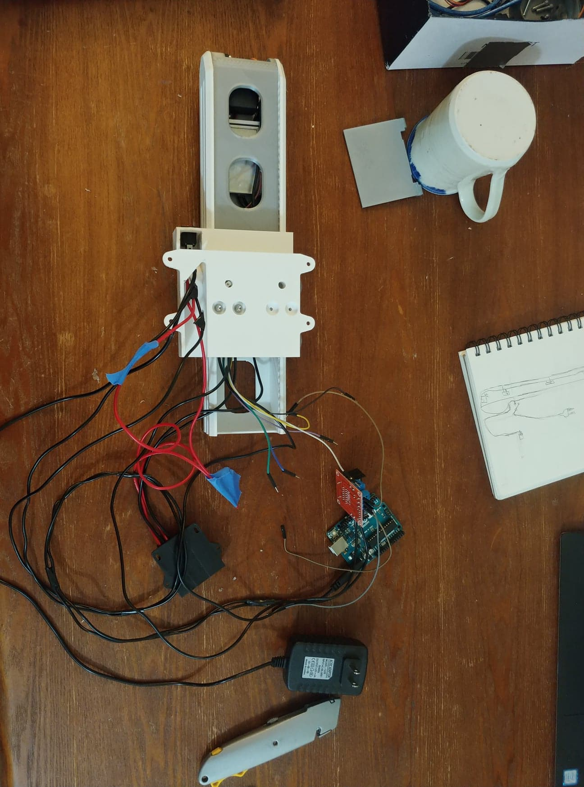

I needed a desk light and had some servos lying around. The only logical conclusion was to make a robotic desk light.

When you are a genius, everything is automated, even your fire extinguisher.
Contrary to my title, the reason I made an automated light is because I have a rather small desk. I already have an overhead light, but I needed something closer that could offer more direct light. When brainstorming ideas, I kept coming back to the idea of having the light out of the way when it wasn’t in use. I was still tossing this idea around when I re-watched the first Iron Man movie. I have always loved the way cinema has made superhero genius’s workshops. It seems like everything Iron Man or Batman touch is automated in some way. As I watched that movie, I realized that this might be a good chance for me to start my own automated workshop. Or work-desk. Anyways, that is what actually inspired me to automate a desk light. The bins of servos and electronics that my significant other has lying around didn’t hurt anything either.
The overall design of the part in CAD was actually the easy part. The difficulty came from the wiring, but more on that later. I am going to use this section to highlight some parts of the design that I am pretty happy with.
Fully retracted.
The sound of 3D printed plastic sliding along itself is horrific. The noise is definitely because of the rough surface finish of the parts, but I have a hunch that it is amplified by the empty chambers between the infill. In addition to the noise, a plastic to plastic interface needs clearence in order to translate and clearence means things can wobble. To avoid this, I found some cheap skateboard bearings and put two rows of them in my design at a 90 degree offset and a slight interference. This way they resist translation and rotation in all directions except z to keep my lamp super stable. Overall, the whole system is studry and quiet so I am very happy with it. Until you turn on the motors. They are the loudest part of my desing, but when you are on a budget, you work with what you have.
Section view of the base. The path for cables is visable on the right of the cut section.
Speaking of motors, this is the lifting system I implemented. The motor (yellow) is a cheap plastic geared motor. I have worked with them in the past and already had a CAD model made, so I just did some calculations and confirmed that it would be strong enough before throwing it in. Even though I knew a single motor would technically work, I was afraid that it wouldn’t raise the light fast enough, so I designed the system with two. In the end, I found that one is enough so I’ll have to remember that for the next version.
Prototype of the robo-light in the real world.
Here is the first prototype, in position. If you are interested in the fancy-looking stylus holder next to it, you should check out my casting project. You might notice that there seems to be no light in the top of this lamp, and you would be exactly right! The main goal at this stage was testing the fit of the printed arms and the static strength of my servos, so the light wasn't required. It definitely wasn't that the light housing was still printing when I took this photo.

The tight clearences make wire orginization paramount.
Wiring was fun. When I designed the gap I was leaving for the wires, I was working off the thin and wide servo wires, and assumed that my other wires would be a similar thickness. Unfortunately, when I went to wire, the only wires I could find were much thicker. I wasn’t sunk because I did leave a bit of extra clearance (in case something came up), but I didn’t have much wiggle room. I ended up printing some small retaining brackets and glued them in areas with space. I chose brackets instead of gluing doen the wires because brackets allow the wires to shift and settle as the arm extends.

The "fun" begins.
Long story short, I got everything to fold together properly. Since this is still a prototype, I can excuse the "relaxed" wiring, but only for so long. What matters is that the servos and motors all work as they are supposed to, and I’ll have a working protype to play with soon enough.
Unfortunately, this project is still unfinished. I started it right before school began and need to focus on my schoolwork, in addition to finding myself a job. Hopefully, I will get a nice and productive winter break and be able to finish this off. I am looking forwards to the final product and I’ll make sure to update this page when it’s finished!
A special thanks to An for letting me raid her "Arduino bin" and helping get me started.